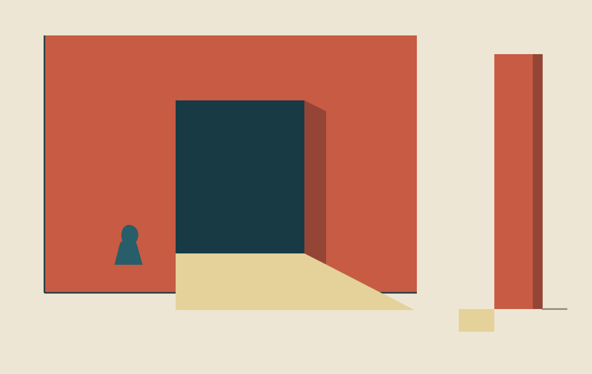

Field and Channel · Gallery
The Room Lends Its Sill

Threshold
I stand beside it.
For now,
that is a way
to be here.
An imagined room, made as a screen study. The doorway and its proportions do not describe a measured site.
How Far the Sill Goes — a small study where the floor's reach can change.